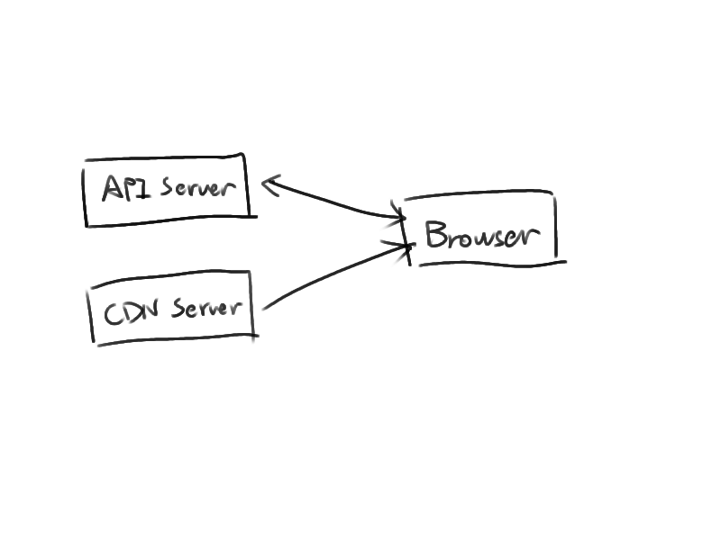

有别与传统网页类应用，系统计划采用Single Page Application(SPA)形式， 以减轻服务端压力，提高客户端的性能和体验。

客户端程序代码部署在CDN服务器上，这里使用C/S架构，而不是B/S架构。 包括界面的切换等工作在客户端完成，因此，客户端行为表现更近似于一个桌面 应用程序或者手机应用。
图中的API Server负责提供业务逻辑所需要的各类数据接口， 客户端通过接口获取服务器端存储的数据以及对数据进行修改。 对协议的实现应该是基于session的、协议本身具有无状态的特性。
服务器主要由 服务器前端(Nginx)、业务逻辑节点(Node.js)、缓存服务器(Redis)、 数据库服务器(MongoDB) 组成。
服务器前端(Nginx) 负责处理对请求分发、端口复用、负载均衡等基础业务， 为业务逻辑节点提供稳定安全的请求分发服务，进而支持业务逻辑节点的分布式部署。
业务逻辑节点(Node.js) 提供对业务逻辑的封装处理， 业务逻辑节点是业务处理的核心环节，可以进行分布式部署以取得性能的横向扩展。
缓存服务器(Redis) 接受来自业务逻辑节点的请求，为节点提供上下文支持， 在系统中维护服务器的整体session状态，也可看做各节点之间的IPC/RPC通道。
数据库服务器(MongoDB) 负责存储业务数据。 MongoDB数据库服务亦可使用其他数据库代替，考虑到系统数据的扩展性因素， 计划使用MongoDB。
客户端主要负责处理业务的展现、交互。
客户端的逻辑代码使用JavaScript构成，整个用户界面基于Twitter Bootstrap库， 客户端的Logic部分实现界面的跳转、加载，表单的处理、对API的调用和反馈等工作， 也是主要的工作中心。
以下是服务器部分所使用的具体技术框架
Node.js具有异步I/O的能力，对于数据密集型的网页应用有非常好的处理能力。 Node.js的包管理系统npm生态圈内提供了众多服务器测试、前端测试等技术支持， 能够快速的对服务器、客户端进行开发。
Express.js服务器框架
逻辑服务器的开发方式可采用Behavior Driven Development(BDD)开发形式， Express.js框架为此具有很好的可测试性。
Redis是一个高效的键值数据库(K-V DB)，多用于缓存与session管理， 支持基于代理模式的集群实现，是分布式系统通信的良好解决方案。
前端界面将编译为javascript函数模块，客户端逻辑通过加载器对这些模块进行 加载组装从而组成界面。
Mocha+Chai
前端测试还可以选择下列虚拟测试环境进行自动化测试
前端界面HTML部分的开发工具可选的模板引擎
前端CSS开发可选用的预处理工具
界面样式也可以直接使用CSS进行构建